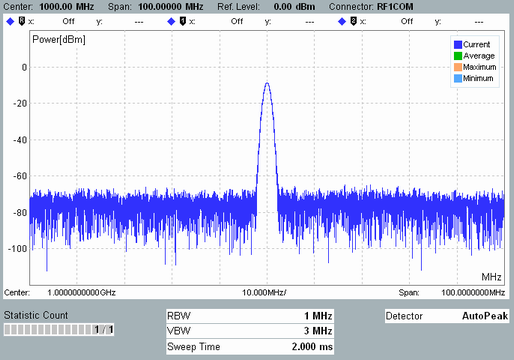
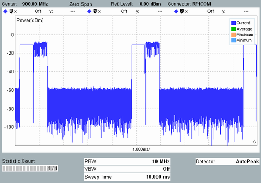

Spectrum Analyzer
The functions provided by this measurement correspond to the functions of a conventional spectrum analyzer.
In "Frequency Sweep" mode, the frequency spectrum of the test signal over the selected frequency range is measured with the selected resolution and sweep time.

Spectrum analyzer: Frequency Sweep mode
In "Zero Span" mode, the waveform of the video signal is displayed for a fixed frequency.

Spectrum analyzer: Zero Span mode
The spectrum analyzer measurement requires option R&S CMW-KM010. |